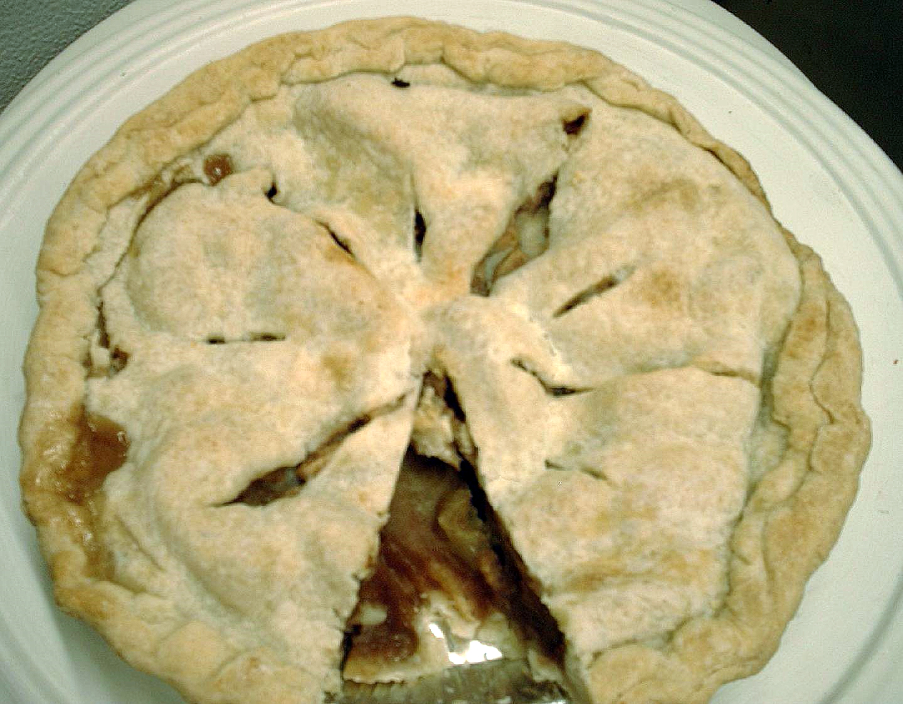

Alice in Chains is an American rock band formed in Seattle, Washington, in 1987 by guitarist and songwriter Jerry Cantrell and original lead vocalist Layne Staley. The initial lineup was rounded out by drummer Sean Kinney and bassist Mike Starr, who was replaced in 1993 by Mike Inez.
Although widely associated with grunge music, the band's sound incorporates heavy metal elements. Since its formation, Alice in Chains has released five studio albums, three EPs, two live albums, four compilations, and two DVDs. The band is known for its distinctive vocal style, which often included the harmonized vocals of Staley and Cantrell (And later William DuVall).
Alice in Chains rose to international fame as part of the grunge movement of the early 1990s, along with other Seattle bands such as Nirvana, Pearl Jam, and Soundgarden. The band was one of the most successful music acts of the 1990s, selling over 20 million albums worldwide,[1] and over 14 million in the US alone.[2] In 1992 the band's second album, Dirt, was released to critical acclaim and was certified quadruple platinum. Their third album, Alice in Chains, was released in 1995 and has been certified double platinum. Both albums achieved No. 1 Billboard 200 releases. The band has had 14 top ten songs on the Mainstream Rock Tracks chart and nine Grammy Award nominations.
The word nirvāṇa is from the verbal root √vā “blow” in the form of past participle vāna “blown”, prefixed with the preverb nis meaning “out”. Hence the original meaning of the word is “blown out, extinguished”. Sandhi changes the spelling: the v of vāna causes nis to become nir, and then the r of nir causes retroflexion of the following n: nis+vāna > nirvāṇa. The term is used in the sense of “dead” in the Mahābhārata (i.e. “life extinguished”). [Monier-Williams Sanskrit English Dictionary sv nirvāṇa]
Nirvāṇa is composed of the three phones ni and va and na:
ni (realized as nir, nis, nih): “out, away from, without”, used to negate
vā: “blowing” as in “blowing of the wind”, also as “smelling”[9]
na: a suffix that turns vā into a past participle.
Hours:
SundayMonday
Tuesday
Wednesday
Thursday
Friday
Saturday
